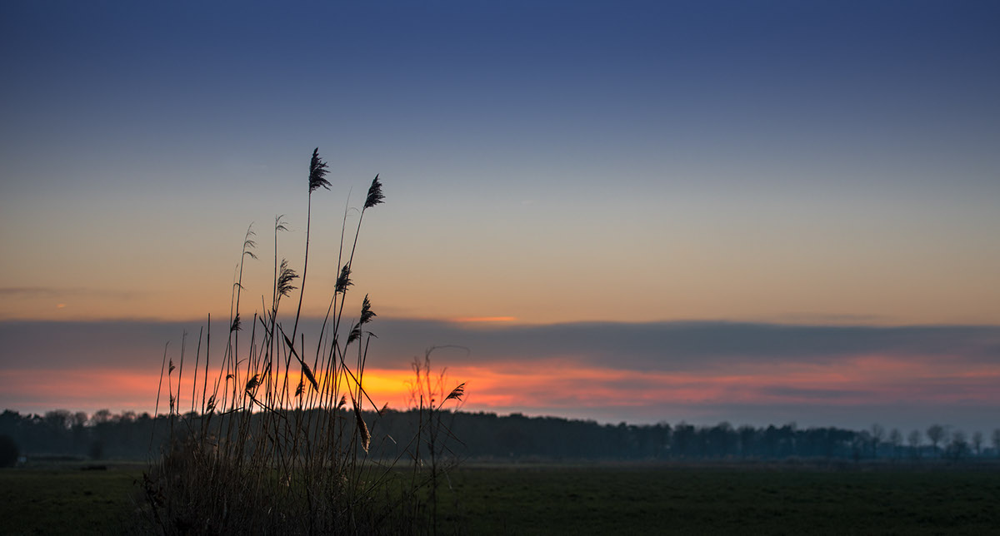

PRJC aims to build an equitable relationship of strength, sustenance,
and dignity between the cities and villages, using under-utilized
material as a tool to trigger development with dignity. We envision
growing as an idea across regions, economies, and countries using urban
surplus material as a tool to address basic but neglected issues of the
financially and materially poor, involving them in designing and
implementing their own solutions, with their own efforts, knowledge, and
dignity, and material as a reward for their participation.

Human dignity and the world’s surplus are at the core of our idea,
ensuring that our actions never undermine the dignity of self, those we
work with, and, most importantly, those we stand with. Besides that, we:
Value localized solutions by engaging local resources, wisdom, and
efforts. Improve before we Change; always value and explore the
potential of what the world already has, focusing on circularity –
material, people, relationships, talent or resources. Value
collaboration in every sphere to increase effectiveness and scale. See
every entity as a stakeholder in the process of development. Focus on
the missed-out; people, material, needs, issues, geographies and
relationships.
Anshu Gupta is an Indian Social Entrepreneur, awarded Magsaysay Award
for his work on transforming the culture of giving in India and for
highlighting material as a sustainable development resource for the
socioeconomically disadvantaged. Popularly known as the Clothing Man,
Anshu founded PRJC, offering a sustainable economic model for
eliminating poverty and related issues. Under his leadership, PRJC
created a barter between urban surplus and village communities labor,
triggering large scale rural development work. Anshu has won many
national and international honors like Ashoka and Schwab Fellowship,
while Forbes Magazine has listed him as one of India’s most powerful
rural entrepreneurs.

Since 1999, PRJC has built a network of communities from urban to
village India, channelizing material as a tool to address crucial gaps
in rural infrastructure, water, environment, livelihood, education,
health, disaster relief and rehabilitation. Its engagement with both the
urban and rural population has galvanized a mass civic participation in
addressing basic but neglected issues. PRJC’s model of development
implemented through its various Initiatives proposes a more inclusive
alternative economy where everyone is an equal stakeholder in the
process.s